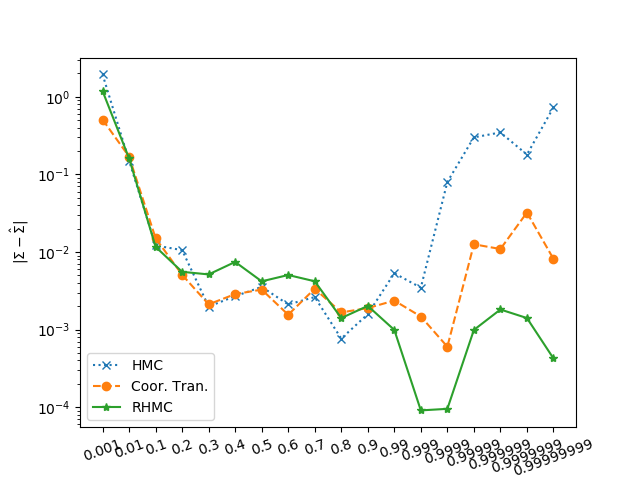

Table of Contents
待修改
本文讨论基于坐标变换和动量变换的哈密顿蒙特卡洛算法
Hamiltonian Dynamics
哈密顿系统中，总能量等于动能和势能之和： \[H=K+U\] 哈密顿公式指出了变量对时间的导数和能量对变量的偏导数之间具有如下关系 \[\dot x=\frac{dK}{dp}\] \[\dot p=-\frac{dU}{dx}\] 用数值算法（欧拉积分）可以实现根据当前时刻的值，求出下一个时刻的值： \[ x^{(i+1)}=x^{(i)} + \delta \frac{dK}{dp}\] \[ p^{(i+1)}=p^{(i)} - \delta \frac{dU}{dx}\]
Quadratic Energy
真实的物理系统一般采用二次动能的形式 \[K(p)=\frac{p^T p}{2}\] 如果考虑惯性矩阵，也可以表示为正定二次型 \[K(p)=\frac{p^T \Sigma p}{2}\] 势能一般为待抽样概率函数的负对数 \[U(x)=-\log \pi(x)\] 为了方便讨论，可以假设势能也是正定二次型 \[U(x)=\frac{x^T \Sigma^{-1} x}{2}\] 细心的读者可能会发现势能二次型矩阵和动能二次型矩阵为逆矩阵的关系。
其实这两个矩阵可以没有任何关系，只是互为逆矩阵会导致出现一些特殊现象，我们随后将进行介绍。
HMC
哈密顿蒙特卡洛的动能采用二次函数，而势能采用正定二次型:
\[K(p)=\frac{p^T p}{2}\]
和
\[U(x)=\frac{x^T \Sigma^{-1} x}{2}\]
如果用以下正定矩阵的二维仿真来举例：
\[\Sigma_1 = \begin{bmatrix}1&0.99\\0.99&1\\\end{bmatrix}\]
可以得到如下仿真结果。
本来动量应当是圆形轨迹，而位置是椭圆轨迹；但由于二者的耦合作用，使得二者的轨迹都偏离了原来的理想轨迹。即位置轨迹不再是椭圆的，动量轨迹也不再是圆形的。

由于概率函数的参数等同于x变量，我们更关心空间位置轨迹的改善情况。然而此时轨迹在空间的移动速度较慢，发生了震荡现象。因此HMC的采样效果不理想。
Riemann HMC
Proposition 1
黎曼哈密顿蒙特卡洛采用二次型的动能函数： \[K(p)=\frac{p^T \Sigma^{-1} p}{2}\] 其中 Σ 矩阵与势能的二次型矩阵相同。 然而这种方法的仿真效果可能比HMC的更差，它无法应用于正定矩阵Σ1, 因为octave软件出现数值错误。
如果降低要求，采用如下正定矩阵， \[\Sigma_2 = \begin{bmatrix}1&0.95\\0.95&1\\\end{bmatrix}\] 可以得到如下的仿真结果:

与HMC相比，这个仿真效果不仅没有明显改善，而且可能还更差，因为它不能应用于Σ1。
Proposition 2
如果采用如下形式的动能
\[K(p)=\frac{p^T \Sigma p}{2}\]
那么仿真算法可以应用于原来的Σ1，其仿真效果如下：

值得指出的是，这时轨迹的震荡现象被消除了，因此抽样效果优于Riemann HMC方案1（以及HMC）。
然而其带来的副作用是：动量轨迹的质量恶化。
HMC based on Coordinate Transformation
如果对x进行坐标变化，得到z，使得势能函数变为简单的二次函数：
\[U = \frac{z^T z}{2}\]
则势能与动能，转换后的位置和动量具有对称的形式:
\[K = \frac{p^T p}{2}\]
将转换后的位置，动量，以及转换回去的原来的位置画在同一副图中：

可以看出，轨迹与三倍标准差的界限符合的非常一致，并且转换回去的位置与Σ1 的界限也完美匹配。
这种方法的缺点是势能函数不停变换，因此不够稳定。
Algorithm
设动能可以表示为原变量x或者变换后的变量z的函数： \[U(x) = \frac{(x-\mu)^T \Sigma^{-1} (x-\mu)}{2} = \frac{z^T z}{2}\] 那么x和z具有如下关系： \[z=\Sigma^{-\frac{1}{2}} (x-\mu)\] \[x=\Sigma^{\frac{1}{2}} z + \mu\] 如果将上述变化带入到欧拉积分中，可以得到：
\[z^{(i+1)}=z^{(i)} + \delta \frac{dK}{dp}=z^{(i)} + \delta p\] \[\begin{split} p^{(i+1)}&=p^{(i)} - \delta \frac{dU}{dz}\\ &= p^{(i)} - \delta \frac{dx}{dz}^T \frac{dU}{dx} \\ &=p^{(i)} - \delta \Sigma^{\frac{1}{2}} \frac{dU}{dx}\bigg|_{x=\Sigma^{\frac{1}{2}} z^{i+1} + \mu} \end{split}\]
因此如果知道均值和协方差矩阵，求协方差的矩阵平方根，就可以得到变换参数。
Estimation of Transformation parameters
到目前位置，我们都假定知道势能的参数μ 和Σ。
然而对于一个目标势能来说，这些参数是未知的，需要从样本中估计出来。
这个过程就像一个循环，从样本中估计参数，然后更新势能函数，随后使得采样更加准确，然后估计出更准确的参数⋯。
如果直接从所有以往的采样样本中直接估计这两个参数，不仅速度慢，而且可能也不准确。
从统计理论可知，正态分布的均值和方差的后验估计的具有确定的解析公式。
虽然我们研究的概率函数不一定服从正态分布，但我们可以假定其服从正态分布，从而利用上面所说的解析公式来更新均值和方差。 以下直接使用教材（Bayesian Data Analysis 3rd, p72）中的公式。
假定给定方差，均值的先验服从正态分布： \[\mu | \Sigma \sim N(\mu_0,\Sigma/\kappa_0)\]
假设方差的先验服从逆wishart分布： \[\Sigma \sim InvWishart_{\nu 0}(\Lambda_0^{-1})\]
则均值和方差的联合后验服从正态-逆wishart分布： \[p(\mu,\Sigma) \propto |\Sigma|^{((\nu_0+d)/2+1)}\text{exp}(-\frac{1}{2}\text{tr}(\Lambda_0 \Sigma^{-1})-\frac{\kappa_0}{2}(\mu - \mu_0)^T \Sigma^{-1}(\mu- \mu_0))\] 则得到如下更新公式。 自由度为： \[\kappa_n = \kappa_0 + n\] 中间变量为： \[ \Lambda_n = \Lambda_0 + S + \frac{\kappa_0 n}{\kappa_{0}+ n} (\bar x - \mu_0)(\bar x - \mu_0)^T\] 方差的后验估计为： \[\hat \Sigma=\frac{\Lambda_n}{\kappa_0+n-D-1}\] 均值的后验估计为 \[\hat \mu = \frac{\kappa_0 }{\kappa_0 +n}\mu_0 + \frac{n}{\kappa_0 + n} \bar x\] 这些符号的意义说明如下：
| 符号 | 说明 |
|---|---|
| \(\Lambda_0\) | 相当于先验 方差之和 |
| \(\kappa_0\) | 先验的自由度 |
| n | 批样本的大小 |
| x | 一批样本 |
| \(\bar x\) | 经验均值 |
| S | 散度矩阵 |
| \(\mu_0\) | 先验均值 |
| \(\hat \Sigma\) | 后验协方差估计 |
| \(\hat \mu\) | 后验均值估计 |
Experiment
我们使用一系列从一般到高度奇异的协方差进行测试： \[ \Sigma = \begin{bmatrix}\frac{1}{\rho}&\rho\\ \rho&\frac{1}{\rho}\\\end{bmatrix}\] 其中 \(\rho\) 从0.0001 变化到 0.9999999。 实现使用了基于位置变换的“大规模并行”哈密顿蒙特卡洛一文中介绍的技术。 然后计算协方差的估计误差，得到如下结果： 
这张图显示，基于位置变换的方法介于HMC和RHMC之间。